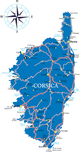

Le café est une boisson énergisante psychotrope stimulante, obtenue à partir des graines torréfiées de diverses variétés de caféier, de l'arbuste caféier, du genre Coffea. Il fait partie des trois principales boissons contenant de la caféine les plus consommées dans le monde, avec le thé et le maté.

Le grand Cabiaï ou Capybara est une espèce de rongeur, un hystricognathe dont la taxinomie et la classification sont encore discutées et varient selon les auteurs. C'est le plus gros rongeur actuel. L'adulte mesure plus d'un mètre de long et pèse plus de 50 kg.

Quatrième île de la mer Méditerranée par sa superficie, la Corse a été rattachée durant près de quatre siècles à la république de Gênes avant une brève indépendance comme royaume de Corse du 15 avril 1736 au mois de décembre 1740.

Un poney (féminin : ponette), appelé cheval nain en Louisiane1, est, selon la définition courante, un cheval de petite taille, avec une conformation et un tempérament particuliers. Il existe de nombreuses races de poneys. Par rapport aux chevaux, les poneys présentent souvent une crinière épaisse, une queue et un pelage fournis, ainsi que des jambes proportionnellement plus courtes, un corps plus large, une ossature plus lourde, une encolure plus courte et épaisse, et une tête plus courte avec le front plus large. La Fédération équestre internationale (FEI) ne prend en considération que la taille pour définir ce qu'est un poney. Selon ses normes, tout cheval de moins d'1,48 m au garrot (ou 1,49 m ferré) est classé « poney », afin de faciliter les compétitions officielles.